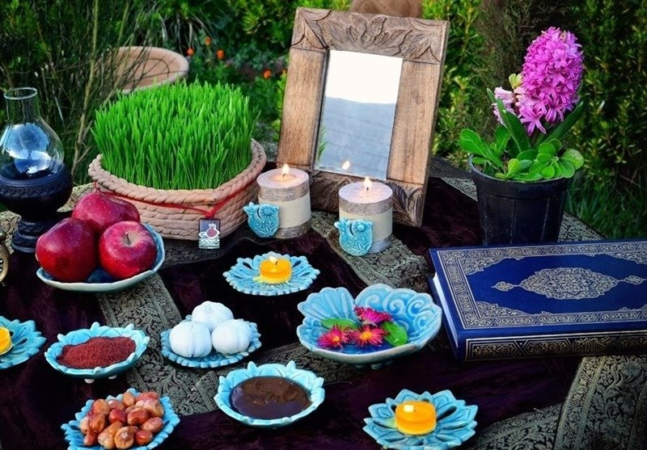
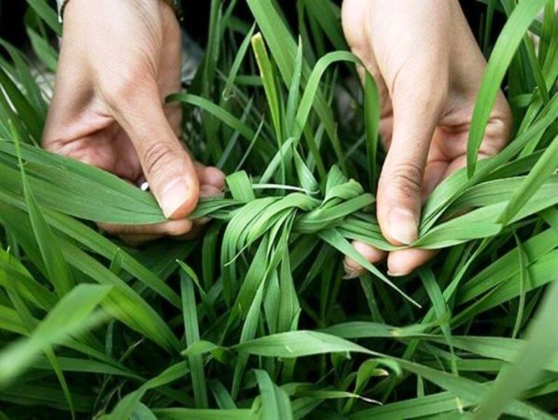

کاشمر یکی از شهرستان های استان خراسان رضوی است که در جنوب غربی مشهد با مساحتی در حدود 2858کیلومتر مربع،واقع شده است
و از شمال به شهرستان نیشابور ،از شمال غربی به شهرستان های سبزوار و بردسکن،از شرق به شهرستان تربت حیدریه از جنوب
و جنوب شرقی به شهرستان مه ولات و از غرب به شهرستان خلیل آباد محدود می شود.
ناهمواری های طبیعی
رشته کوه شمالی:
این رشته کوه از کوه های خواف شروع شده و از شمال تربت حیدریه گذشته و در گردنه محمد میرزا،جاده اصلی مشهد به زاهدان را قطع کرده
و تا قریه ی حصار،آخرین حد تربت حیدریه امتداد داشته،سپس به طرف باختر کشیده شده است. در این رشته کوه،یک سلسله کوه ها و تپه ماهورها که مربوط به دوران سوم زمین شناسی است در حدود<<عطائیه>>و <<شادی>>مشاهده میشود.
و هم چنین در قسمت های بلوک کوهسرخ کوه های مربوط به دوران چهارم زمین شناسی قرار دارد که هنوز قله های مخروطی شکل آن دیده میشود مانند: کوه آتش فشان در شمال ریوش(مرکز بخش کوهسرخ)که نام اصلی آن آتش فشان بوده و بومیان آن را آتشان می خوانند.
کوه های کوهسرخ دارای امتداد غربی شرقی اند و با ارتفاع نسبتا بلند خود بخشی از رطوبت جریان های جوی غرب به شرق را جذب می کنند. لذا کوه های این منطقه پوشیده از درختان بادام میباشد و پایکوه های آن از نظر کشت و کار یکی از مستعد ترین مناطق خراسان رضوی است.
رشته کوه جنوبی: این رشته کوه از کال رودنجی شروع و به کوه یخاب ختم می شود.این رشته کوه که معروف به کوه مغان می باشد از جمله کوه های بسیار قدیمی است که سالیان دراز در زیر آب دریای کم عمق آسیای مرکزی [دریای تتیس] پنهان بوده که پس از چین خوردگی خلیج فارس از زیر آب بیرون آمده و در مقابل نور خورشید قرار گرفته و دارای تپه های گچی است.
مذهب و اعتقادات
مردم کاشمر مسلمان و شیعه اثنی عشری و دارای مذهب جعفری می باشند. اکثریت جمعیت بین 99/9درصد مسلمان می باشند و 0.1 دیگر را پیروان ادیان دیگر تشکیل می دهند که در
حال حاضر اکثر آن ها از این شهرستان به کشور های خارج یا شهر های دیگر کوچ کرده اند.اعتقادات مذهبی و پایبند بودن مردم کاشمر به فرامین دینی
باعث گردیده چهره شهرستان مذهبی باشد.
لذا بارز ترین ویژگی مردم این شهرستان،مذهبی بودن و مودت و دوستی آن ها به اهل بیت عصمت و طهارت میباشد.
وجود حسینیه ها،مساجد ،موقوفات ،مزارات پیران عارف ضمیر،امام زادگان به خصوص این سه امام زاده عزیز:
در گذر تاریخ،این دیار مرکز پرورش علما و مجتهدین زیادی بوده،تا آن جا که کاشمر به عنوان قم ثانی و نجف اصغر یاد نموده اند و به همین جهت بوده است
که کاشمر را دارالمومنین نیز خوانده اند.
فرهنگ و آداب و رسوم
فرهنگ به مجموعه شیوه های زندگی یک جامعه اطلاق میشود;
چگونگی لباس پوشیدن آن ها ،رسوم ازدواج و زندگی خانوادگی،
الگو های کارشان ،مراسم مذهبی و سرگرمی های اوقات فراغت همه را در بر میگیرد.
فرهنگ عامه هر یک از اقوام ذخیره گران قدری است،
که از فکر و اخلاق و اعتقاد گذشتگان سرچشمه گرفته است
که امروز هم در زندگی همه حاکم است و مردم به آن آداب رسوم و عقاید و عادات،
ارزش و احترام قائلند و رعایت و اجرای آن ها را از نیاز های مردمی می دانند.
عید نوروز از نظر مردم کاشمر:
مردم کاشمر در عید نوروز لحظاتی پس از سال تحویل،دسته دسته به دیدن اقوام و خویشان،
همسایگان و دوستان میروند تا سال نو را به آنان تبریک گویند.
آن ها به رسم ادب،ابتدا به دیدن بزرگان فامیل میروند.این دید و بازدید تا روز سیزده ادامه دارد.
یکی از رسم و رسوم مردم کاشمر این است که نزدیک تحویل سال سفره هفت سین پهن میکنند
و غالب آن ها تا چهارم عید از مهمانان خود سر همان سفره پذیرایی می کنند.
سیزده بدر:
همانطور که در سراسر ایران مرسوم است که مردم،سیزده فروردین را به دامان طبیعت می روند
و این روز را در بیرون از خانه سپری میکنند،در منطقه کاشمر هم مردم در روز یادشده
از منازل خود خارج شده و سعی میکنند این روز را در مزارع،کلاته ها،باغ ها و اماکن مذهبی،
از جمله حرم امام زادگان سید مرتضی(ع)و سید حمزه(ع)و سید محمد(ع)بگدرانند.
یکی از رسم های این منطقه این است که دختر های دم بخت به میان سبزه ها رفته و به امید
باز شده بختشان سبزه گره می زنند.


کشاورزی
محصولات کشاورزی شهرستان کاشمر علاوه بر مصارف داخلی استان و کشور،بعضا به خارج از کشور نیز صادر می گردد.
به عنوان نمونه کشمش سبز قلمی کاشمر که زبانزد خاص و عام می باشد را میتوان از این جمله دانست.
این شهرستان در سال 81-82 در محصولات طالبی،انگور،بادام،زعفران،نخود،شبدر،خیار،بادمجان،ریواس،
دارای رتبه اول تا سوم از لحاظ تولید و سطح زیر کشت در استان خراسان بوده است.
محصولات عمده زراعی:
کشت محصولات زراعی در شهرستان کاشمر در دو مرحله انجام میگیرد:کشت پاییزه یا سفید برگ مانند:
گندم،جو،زیره و...
کشت بهاره یا سبز برگ مانند:پنبه،خربزه،هندوانه،گوجه فرهنگی،بادمجان و...
گندم
از جمله محصولات عمده کشاورزی که سابقا نقش مهمی در تغذیه خانواده ها داشت گندم است.
ولی اخیرا با توجه به این که در اکثر روستاها نانوایی وجود دارد و آرد نانوایی ها را دولت تامین میکند،
مردم محصولات گندم خود را به دولت می فروشند و به ندرت برای تغذیه خانواده های خود استفاده میکنند.
جو
از جمله محصولات عمده کشاورزی جو است که کما کان نقش مهمی در تغذیه ی دام های منطقه دارد.کشت آبی جو در دهستان های بالا ولایت و پایین ولایت بخش مرکزی بیشتر از کشت
دیمی جو در دهستان های بررود،بر کوه و نکاب بخش کوهسرخ رواج دارد.